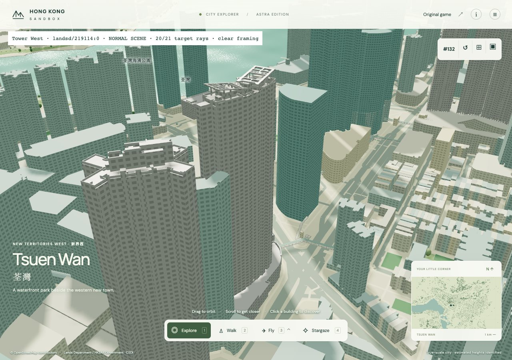
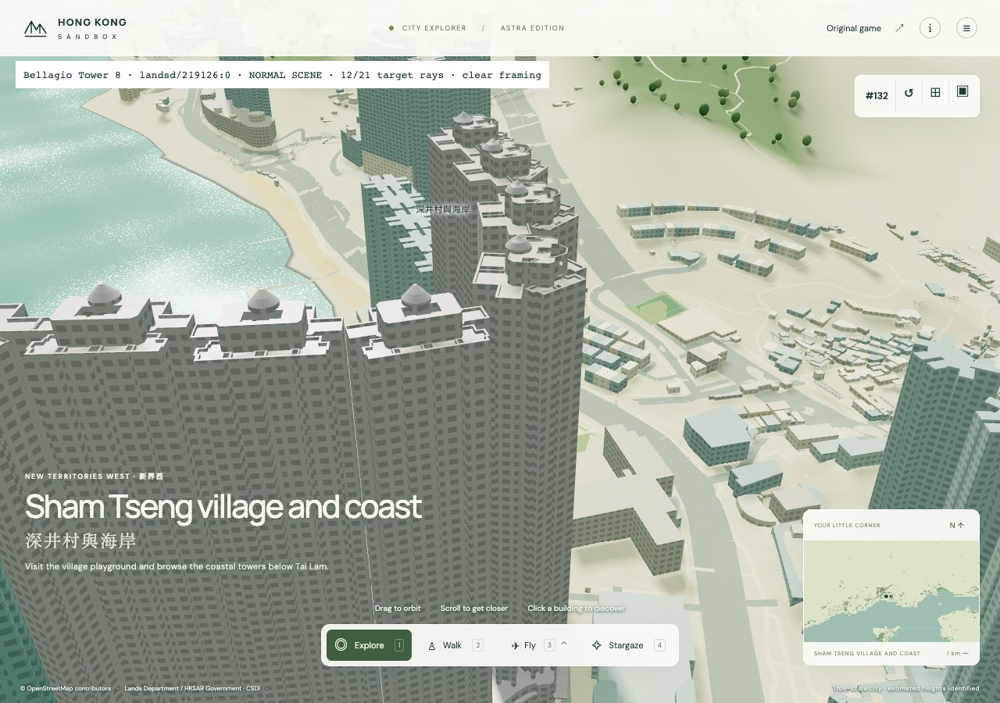
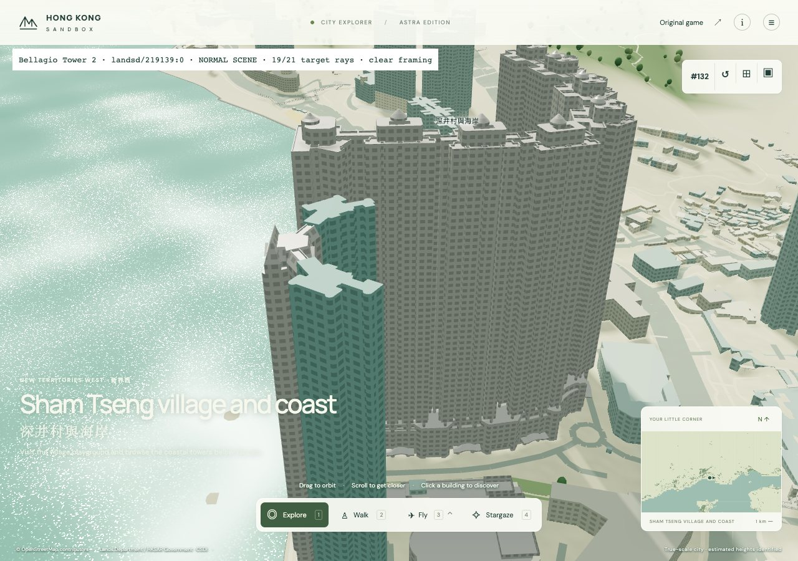
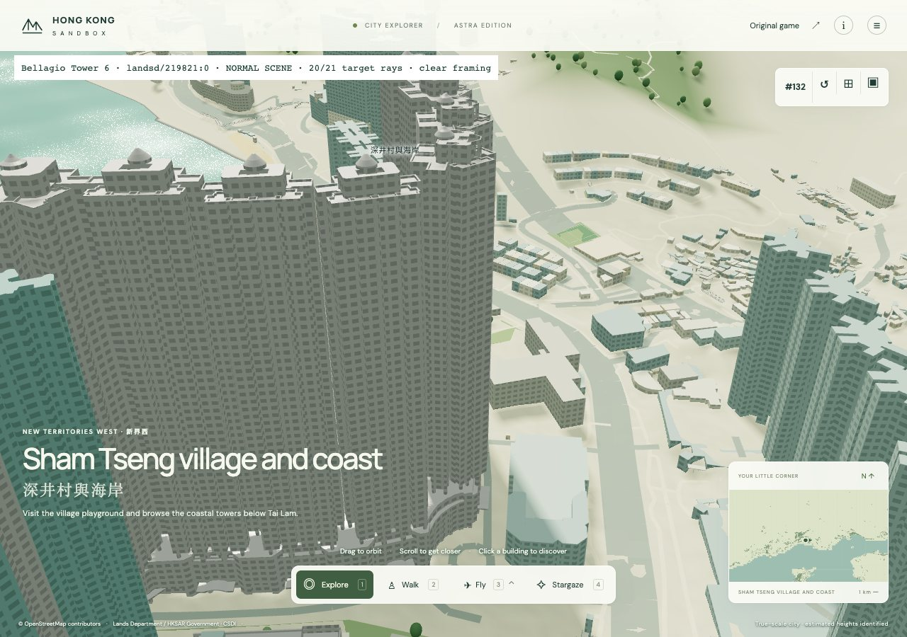
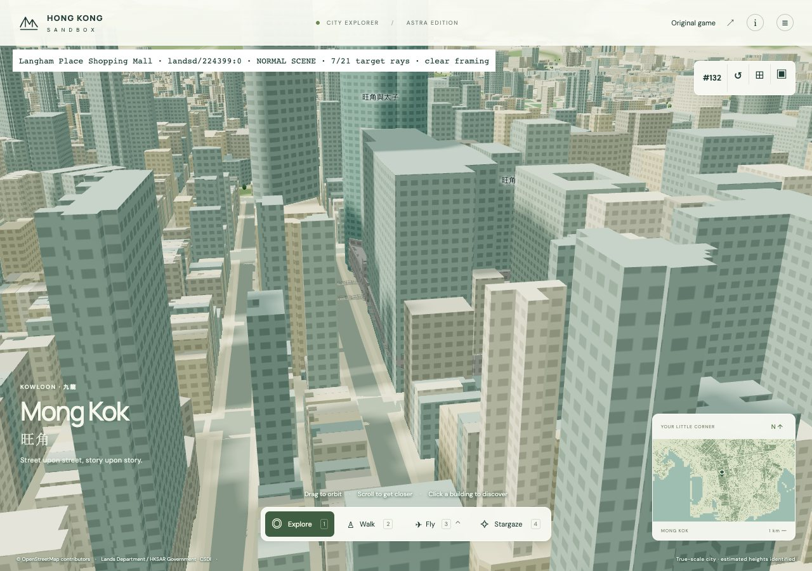
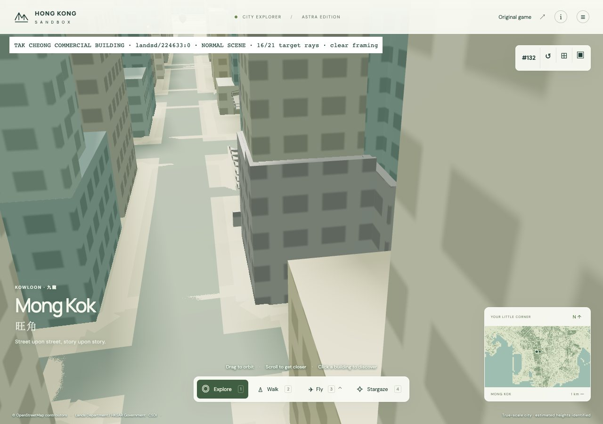

scene · native camera clear · 20/21 source rays

scene · native camera clear · 12/21 source rays

scene · native camera clear · 19/21 source rays

scene · native camera clear · 20/21 source rays

scene · native camera clear · 7/21 source rays

scene · native camera clear · 16/21 source rays